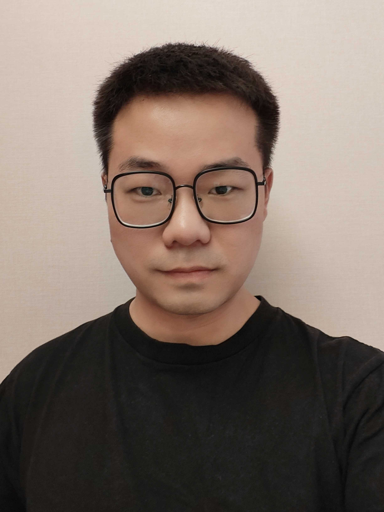

Jingwang Li
|  | AboutSince Sept. 2023, I have been working as a Research Assistant in The Chinese University of Hong Kong, Shenzhen (CUHK-Shenzhen), where my research focuses on non-smooth decentralized optimization under the guidance of Dr. Xiao Li. From Jun. 2022 to Sept. 2023, I worked as an R&D Engineer at FABU.AI, focusing on addressing optimization problems in the field of autonomous driving. Prior to that, I pursued my master's degree at Huazhong University of Science & Technology, where I conducted research on the theory of decentralized optimization under the supervision of Prof. Housheng Su. Before that, I obtained my bachelor's degree from Huazhong Agricultural University.
|
News
Sept. 2023, I began my role as a Research Assistant at CUHK-Shenzhen.
Sept. 2023, I resigned from FABU.AI.
Research Interests
My research interests mainly focus on theory and applications of decentralized optimization, currently I am devoted to developing efficient and robust algorithms for a class of decentralized optimization problems with globally coupled constraints.
Education
Sept. 2019 - Jun. 2022 : Master of Engineering, Control Science & Engineering, Huazhong University of Science & Technology
Sept. 2015 - Jun. 2019 : Huazhong Agricultural University
Sept. 2016 - Jun. 2019 : Bachelor of Management, Engineering Management
Sept. 2015 - Jul. 2016 : Majored in Aquatic Science & Technology (I switched to Engineering Management at the beginning of my sophomore year)
Preprints
Jingwang Li and Housheng Su*. “Decentralized constraint-coupled optimization with inexact oracle”, arXiv:2309.06330, 2023. [PDF]
Jingwang Li and Housheng Su*. “NPGA: A unified algorithmic framework for decentralized constraint-coupled optimization”, arXiv:2205.11119, 2022. [PDF]
Jingwang Li and Housheng Su*. “Gradient tracking: A unified approach to smooth distributed optimization”, arXiv:2202.09804, 2022. [PDF]
Publications
Jingwang Li and Housheng Su*. “Implicit tracking-based distributed constraint-coupled optimization”, IEEE Transactions on Control of Network Systems, 2022. [PDF]
Jingwang Li, Qing An and Housheng Su*. “Proximal nested primal-dual gradient algorithms for distributed constraint-coupled composite optimization”, Applied Mathematics and Computation, 2023.
Jingwang Li, Suoxia Miao and Housheng Su*. “Distributed primal-dual mirror dynamics for constraint-coupled optimization”, International Conference on Guidance, Navigation and Control, 2022.
Awards
Jun. 2022, Outstanding Graduate of Huazhong University of Science & Technology
Sept. 2019, National Innovation Contest for Intelligent Construction and Management, First prize
Sept. 2019, Outstanding Bachelor Degree Thesis of Huazhong Agricultural University
Jun. 2019, Outstanding Graduate of Huazhong Agricultural University
Dec. 2017, Programming Contest of Huazhong Agricultural University, Second prize
Nov. 2017, China Undergraduate Mathematical Contest in Modeling, First prize